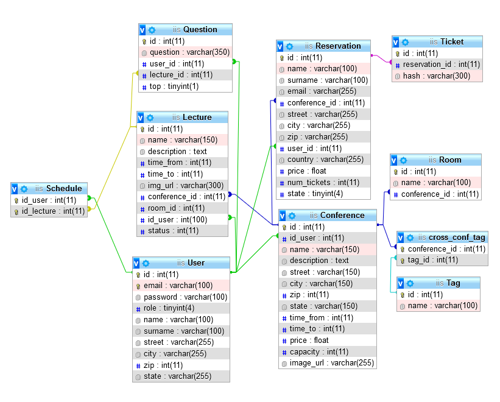

1. Konference: správa událostí, prezentací a účastníků
- Autoři
- Martin Matějka
xmatej55@stud.fit.vutbr.cz -
Simpletable, Pagination, Otázky, Admin panel
- Simon Košina
xkosin09@stud.fit.vutbr.cz -
Konference, Miestnosi,Prednášky, Main page
- Adam Kačo
xkacoa00@stud.fit.vutbr.cz -
Inštalačný skript, Košík, Rozvrh, Rezervace
- URL Projektu
- https://iis.aurelserver.eu
Uživatelé systému pro testování
Uveďte prosím existující zástupce všech rolí užívatelu.
| Login | Heslo | Role |
|---|
| admin@admin.sk | adminadmin | Administrátor |
| user@user.sk | useruser | Uživatel |
| owner@owner.sk | ownerowner | Majiteľ konferencie |
Implementace
Zložka /admin obsahuje dve stránky na spravovanie konferencí a užívateľov, ostatné veci môže admin spravovať rovnako ako užívateľ
Zložka /ajax obsahuje skripty na obsluhovanie všetkých ajax dotazov, ktoré sa nachádzajú v konkrétnych stránkach
Zložka /classes obsahuje triedy implementujúce objekty v zadaní:
- cart.class.php obsahuje implementáciu košíka
- conferences.class.php obsahuje implementáciu konferencií
- database.class.php obsahuje implementáciu pripojenia k databáze
- fileUpload.class.php obsahuje implementáciu uploadovania súboru na server
- lecture.class.php obsahuje implementáciu prednášok
- question.class.php obsahuje implementáciu otázok k prednáškam
- reservation.class.php obsahuje implementáciu rezervácií
- room.class.php obsahuje implementáciu miestností
- schedule.class.php obsahuje implementáciu rozvrhu
- table.class.php obsahuje implementáciu SimpleTable, ktorá automaticky generuje výpis tabuľky podľa nastavených kritérií
- tag.class.php obsahuje implementáciu označení každej konferencie
- user.class.php obsahuje implementáciu používateľa
- ticket.class.php obsahuje statické funkcie k implementácií vstupeniek
Zložka /conferences obsahuje všetky stránky, ktoré sa týkajú Konferencie, miestností a prednášok
Zložka /css obsahuje použité štýly a štýly z knižnice Bootstrap a Font-Awesome
Zložka /img obsahuje statické obrázky na stránke
Zložka /js obsahuje použité skripty a skripty knižnice Bootstrap a JQuery
Zložka /lecture obsahuje stránky pre akcie ohľadom prednášok
Zložka /user obsahuje všetky stránky ktoré sa týkajú užívateľa - nastavenia, jeho konferencie ...
Databáze

Instalace
Struční popis
- Postup instalace:
- Presunúť súbory do koreňového adresáru web serveru
- V súbore /classes/database.class.php zadať v defines názov hostitela,meno,heslo,meno databázy
- Načítať skript /install.php
- Po úspešnej inštalácií vymazať súbory install.php a db_init.sql
- Inštalácia vytvorí Administrátora admin@admin.sk s vygenerovaným heslom, ktoré vypíše pri inštalácií.
- Software bol odladený a testovaný na PHP verzi 7.4.10, požadovaná verzia je PHP 5.6+
Známé problémy
Zadanie je implementované v plnom rozashu.